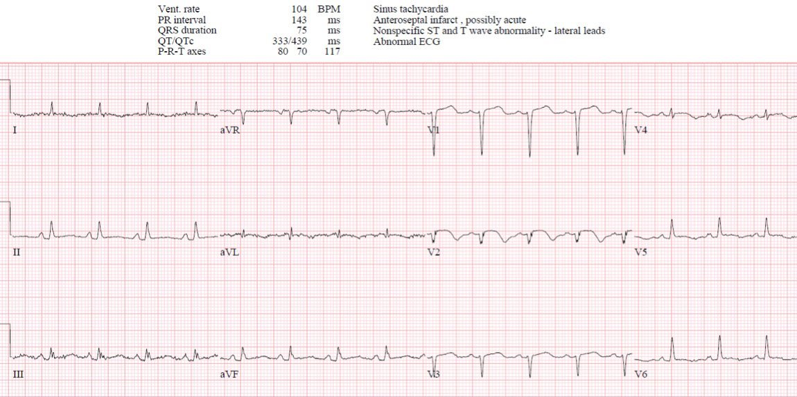
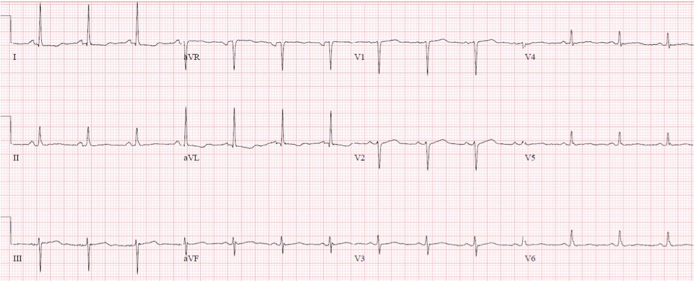
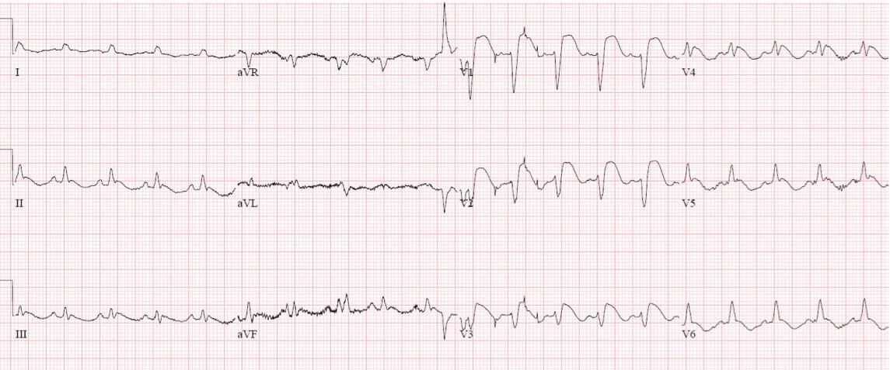
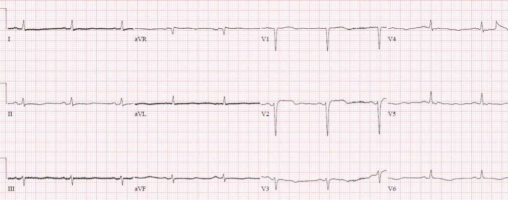

19/08/2022 — Bệnh nhân 60 tuổi nôn, tiêu chảy và ngất: đây có phải là Wellens? Đây có phải là nhồi máu cơ tim típ 2?
Bản dịch tiếng Việt của bài "60 year old with vomiting, diarrhea, and syncope: is this Wellens? Is this type 2 MI?" – Dr. Smith’s ECG Blog. Giữ nguyên toàn bộ 5 hình ảnh của bản gốc.
Bài viết của Jesse McLaren, có chỉnh sửa/bình luận của Smith và Grauer
Một bệnh nhân 60 tuổi có đái tháo đường và bệnh thận giai đoạn cuối (ESRD) đến viện vì nôn,
tiêu chảy, mệt yếu trong 24 giờ rồi sau đó có một cơn ngất. Dấu hiệu sinh tồn: nhịp thở 18, độ bão hòa oxy 98%, nhịp tim 103, huyết áp
124/71 và nhiệt độ 38.0. Đây là điện tâm đồ của bệnh nhân: đây có phải là Wellens không?


Có
nhịp nhanh xoang ở mức ranh giới, dẫn truyền bình thường, trục
bình thường, và điện thế thấp ở các chuyển đạo chi. Các chuyển đạo trước có mất sóng R, đoạn ST hơi lồi và sóng T
đảo ngược
nguyên phát. Trong bối cảnh có sóng QS, sóng T đảo ngược cho thấy nhồi máu cũ hoặc bán cấp, hoặc tái tưới máu sau một nhồi máu đáng kể. Dưới
đây là điện tâm đồ
cũ:


Điện tâm đồ này xác nhận các thay đổi ở thành trước là mới – nhưng đây là do OMI típ 1 hay OMI
típ 2? Bệnh nhân
được chẩn đoán và điều trị nhiễm khuẩn huyết (sepsis) và nhiễm toan ceton do đái tháo đường (DKA), và nhận định duy nhất của bác sĩ cấp cứu về điện tâm đồ đầu tiên là nó không đạt tiêu chuẩn STEMI.
Smith bình luận:
1) Một số nhồi máu cơ tim típ 1 chỉ biểu hiện bằng triệu chứng không điển hình, nhất là ở người đái tháo đường. Các triệu chứng không điển hình như vậy bao gồm nôn, nhưng không bao gồm tiêu chảy.
2) Nhồi máu cơ tim típ 2 đòi hỏi phải có mất cân bằng cung-cầu. Cung giảm: hạ huyết áp, thiếu oxy, thiếu máu, rối loạn hemoglobin (dyshemoglobinemia). Cầu tăng: nhịp tim nhanh, tăng huyết áp, thất trái giãn (căng thành). Bệnh nhân này không có bằng chứng nào của mất cân bằng cung-cầu.
3) Điện tâm đồ gợi ý một nhồi máu vùng LAD gần như đã hoàn tất do có sóng QS ở V2 và V3.
Troponin đầu tiên trả về là 68,000 ng/L, được quy cho nhồi máu cơ tim típ 2 (mặc dù đây không phải là một phép phân đôi đơn giản, như BS. Grauer giải thích trong phần bình luận bên dưới.) Bệnh nhân được
chuyển khám tim mạch, và các bác sĩ tim mạch phát hiện giảm động thành trước vách trên siêu âm tim tại giường. Trước đây bệnh nhân đã làm siêu âm tim gắng sức với EF bảo tồn nhưng có thiếu máu cục bộ gây ra được (inducible) ở vùng cấp máu của LAD. Như họ ghi nhận: “Không chụp mạch vành cấp cứu vì bệnh cảnh nhiễm khuẩn huyết/DKA làm nhiễu việc đánh giá nhồi máu cơ tim típ 1, nhưng chắc chắn cần chụp mạch vành và điều trị nội khoa hội chứng vành cấp (ACS).” Vì vậy họ khởi động kháng tiểu cầu kép và heparin
với
kế hoạch chụp mạch vành vào ngày hôm sau, sau khi điều trị nhiễm khuẩn huyết/DKA.
Smith: troponin tăng cực cao cũng phù hợp với một nhồi máu bán cấp và đã hoàn tất (xuyên thành) hoặc gần như hoàn tất.
Không may, 12 giờ sau khi đến viện, bệnh nhân bị ngừng tim do rung thất
(VF). Đây là điện tâm đồ sau sốc điện chuyển nhịp.


OMI STEMI dương tính (STEMI(+)OMI) thành trước, nên phòng thông tim được kích hoạt: LAD tắc 100% nhưng đây là tắc mạn tính, với tuần hoàn bàng hệ từ RCA còn nguyên vẹn và từ động mạch mũ (circumflex) vốn
hẹp 90%.
Smith: Thành trước rõ ràng đã được cấp máu qua tuần hoàn bàng hệ từ RCA và động mạch mũ, vì có tắc mạn tính LAD. Động mạch mũ bị hẹp khít, nhưng vẫn thông. Do đó thành trước dễ bị tổn thương do mất cân bằng cung-cầu, nhưng (như đã nói ở trên) chúng ta không có bằng chứng nào cho điều đó. Việc RCA và động mạch mũ hiện đang thông không có nghĩa là chúng cũng thông cách đây 20 giờ. Và chụp mạch vành thường không xác định được thủ phạm. Vì vậy tôi nghi ngờ rằng một hoặc cả hai động mạch này đã bị tắc trong vòng 24 giờ qua, dẫn tới một nhồi máu thành trước diện rộng.
Đã có một lần thử đặt stent vào chỗ tắc mạn tính nhưng không thành công. Troponin đỉnh là 95,000, EF giảm còn 45% với rối loạn vận động thành trước,
và dưới đây là điện tâm đồ lúc ra viện cho thấy sóng T đảo ngược nông ở các chuyển đạo trước:


Như bài
viết này giải thích, hội chứng Wellens mô tả
1.
bệnh nhân: triệu chứng đau thắt ngực đã hết
2.
điện tâm đồ: sóng T đảo ngược nguyên phát do tái tưới máu ở vùng phân bố của LAD
nhưng sóng R còn nguyên, cho thấy tái tưới máu đã xảy ra trước khi có
nhồi máu đáng kể
3.
Troponin: tăng nhẹ
4.
Chụp mạch vành: tổn thương hẹp khít ở LAD, hiện đã
thông, hoặc được tái tưới máu nhờ tuần hoàn bàng hệ, nhưng có nguy cơ cao tắc lại
Nhưng trong ca này
1.
bệnh nhân đến viện với nhiễm khuẩn huyết hay triệu chứng tương đương đau thắt ngực: nhiễm khuẩn huyết có thể gây
ST chênh xuống lan tỏa và ST chênh lên soi gương ở aVR (vốn không phải là “tương đương
STEMI” mà là dấu hiệu của thiếu máu cục bộ dưới nội tâm mạc
lan tỏa), nhưng không nên gây ra các thay đổi điện tâm đồ khu trú giống
OMI
2.
Điện tâm đồ cho thấy sóng T đảo ngược nguyên phát
ở vùng phân bố của LAD, nhưng cũng có mất sóng R, cho thấy đã có nhồi máu đáng kể
3.
Troponin tăng rất cao
4. Chụp mạch vành cho thấy tắc hoàn toàn mạn tính (CTO) của LAD và tuần hoàn bàng hệ hạn chế, vốn đã bị tổn hại
Như thử nghiệm EXPLORE đã giải thích: “Tổn thương CTO đồng thời được tìm thấy ở 10% đến 15% bệnh nhân STEMI… Do thủ thuật phức tạp và tỷ lệ thành công dưới mức trung bình, PCI chỉ được thử thực hiện ở 10% trong tất cả các tổn thương CTO, thường trong bối cảnh chương trình… Ở bệnh nhân STEMI có CTO đồng thời, chúng tôi không thấy lợi ích bổ sung của PCI tổn thương CTO về LVEF hay thể tích cuối tâm trương thất trái (LVEDV). Tuy nhiên, một phân tích dưới nhóm gợi ý rằng bệnh nhân có CTO ở LAD có thể hưởng lợi từ PCI bổ sung sớm cho tổn thương CTO.” (Henriques và cs. Percutaneous Intervention for Concurrent Chronic Total Occlusions in Patients with STEMI: the EXPLORE trial. JACC 2016)
Ở bệnh nhân có CTO, tuần hoàn bàng hệ có vai trò then chốt. Như một nghiên cứu khác ghi nhận: “Ở các tổn thương CTO, dòng máu xuôi dòng bị gián đoạn hoàn toàn, khiến cơ tim phụ thuộc hoàn toàn vào dòng chảy bàng hệ… Nếu tuần hoàn bàng hệ cấp máu cho vùng cơ tim phụ thuộc bàng hệ của CTO xuất phát trực tiếp hoặc ở đoạn xa từ động mạch liên quan đến nhồi máu (IRA), thì cơ tim có thể bị đe dọa khi động mạch này bị tắc trong STEMI. Điều này có thể làm tăng kích thước ổ nhồi máu và giảm LVEF, dẫn tới tử vong cao hơn. Trong nhóm nghiên cứu của chúng tôi có xu hướng tử vong cao hơn ở những bệnh nhân có tuần hoàn bàng hệ ngược dòng phát triển tốt tới CTO, xuất phát từ IRA, vốn bị tắc trong STEMI.” (Elias và cs. Impact of collateral circulation on survival in ST-segment elevation myocardial infarction patients undergoing primary percutaneous coronary intervention with a concomitant chronic total occlusion. JACC 2017)
Mặc dù đoạn này mô tả tuần hoàn bàng hệ bị tổn hại do huyết khối cấp (nhồi máu cơ tim típ 1), tuần hoàn bàng hệ cũng có thể bị tổn hại do mất cân bằng cung-cầu (nhồi máu cơ tim típ 2). Xem bài viết này về OMI thành sau típ 2 thứ phát do viêm phổi và thiếu máu nặng: “Siêu âm tim chính thức cấp cứu cho thấy rối loạn vận động thành
dưới-bên. Trong hồ sơ, một lần chụp mạch vành cũ ghi nhận nhánh bờ tù (OM)
tắc mạn tính. Siêu âm tim trước đó bình thường, nhưng một
siêu âm tim gắng sức đã cho thấy giảm động thành dưới-bên được gây ra (induced).
Như vậy, trước đó đã có bằng chứng rằng vùng này dễ bị tổn thương khi gắng sức;
vùng cấp máu của động mạch này phụ thuộc vào tuần hoàn bàng hệ để
được cung cấp oxy.”
Điều cần nhớ
1. Hội chứng Wellens mô tả OMI típ 1 ở LAD có tái tưới máu
tự phát, nhưng
mất sóng R, đặc biệt là sóng QS, ngụ ý rằng đã có một nhồi máu lớn
2. tái tưới máu tự phát có thể xảy ra do động mạch mở thông
hoặc do huy động
tuần hoàn bàng hệ, tức là tái tưới máu có thể xảy ra ở những động mạch
vẫn còn tắc (tắc cấp hoặc
tắc mạn tính) nếu có đủ tuần hoàn
bàng hệ – vốn rất mong manh
3. Bệnh nhân có CTO phụ thuộc vào tuần hoàn bàng hệ, vốn có thể bị
tổn hại bởi nhồi máu cơ tim típ 1
(huyết khối) hoặc nhồi máu cơ tim típ 2 (mất cân bằng cung/cầu):
điều trị nhắm vào
khắc phục tình trạng mất cân bằng cung/cầu, tái tưới máu các động mạch vành
bị tắc cấp tính
+/- tái thông mạch cho CTO

====================================
BÌNH LUẬN CỦA TÔI, bởi KEN GRAUER, MD (19/8/2022):
===================================
Ca bệnh hôm nay của BS. McLaren gợi ra việc xem xét mối liên quan giữa Nhiễm trùng cấp và Nhồi máu cơ tim. Một bài báo gần đây của Musher và cs với đúng tiêu đề này tổng quan một loạt đặc điểm hấp dẫn của mối liên quan này (Musher và cs — N Engl J Med 380:171-176, 2019 — kèm bản tóm tắt truy cập miễn phí các Điểm CHÍNH của Hayek trên ACC: Latest in Cardiology, 2019).
- Ca bệnh hôm nay của BS. McLaren kể lại quá trình nằm viện của một bệnh nhân bị nhiễm khuẩn huyết và DKA — với diễn biến phức tạp gồm ngừng tim do rung thất (VFib), troponin tăng rất cao và cuối cùng là STEMI thành trước.
- Trong số các điểm được nêu ra trong bài Tổng quan NEJM nói trên — là thực tế rằng mối liên quan giữa nhiễm trùng cấp và nhồi máu cơ tim cấp chỉ mới được nhận ra trong vài thập kỷ gần đây. Ngày càng nhiều y văn ghi nhận mối liên quan giữa nhồi máu cơ tim và các nhiễm trùng do virus và vi khuẩn như cúm, viêm phổi, nhiễm khuẩn đường tiết niệu, nhiễm khuẩn huyết và nhiều bệnh khác. Phát hiện rằng nguy cơ nhồi máu cơ tim cấp cao nhất vào lúc khởi phát nhiễm trùng — và tỷ lệ thuận với mức độ nặng của nhiễm trùng — củng cố giả thuyết về mối quan hệ nhân-quả .
- Đáng ngạc nhiên — các tác giả bài Tổng quan NEJM cho rằng thiếu máu cục bộ do tăng nhu cầu (tức là nhồi máu cơ tim cấp típ 2) chỉ giải thích được một số ít biến cố nhồi máu cơ tim liên quan đến nhiễm trùng. Thay vào đó — họ cho rằng nguyên nhân của phần lớn các trường hợp nhồi máu cơ tim liên quan đến nhiễm trùng là tắc mạch vành cấp ( = nhồi máu cơ tim cấp típ 1).
- Các cơ chế được đề xuất để giải thích việc nhiễm trùng cấp có thể dẫn tới tắc mạch vành cấp bao gồm (cùng một số cơ chế khác): i) Mất ổn định mảng xơ vữa sẵn có do các yếu tố viêm cấp (tức là cytokine, interleukin, yếu tố hoại tử u); ii) Tăng tạo huyết khối kèm hoạt hóa tiểu cầu đi kèm nhiễm trùng cấp; iii) Biểu hiện gen liên quan đến hoạt hóa tiểu cầu, rối loạn chức năng nội mô và tình trạng tăng đông, có thể bị một số virus thúc đẩy.
- Các cơ chế được đề xuất để giải thích việc nhiễm trùng cấp có thể dẫn tới nhồi máu cơ tim típ 2 (do thiếu máu cục bộ do tăng nhu cầu) bao gồm: i) Suy giảm tưới máu mạch vành bất chấp nhu cầu chuyển hóa tăng do nhiễm trùng cấp (tức là nhịp tim nhanh bù trừ làm rút ngắn thời gian đổ đầy thất trong tâm trương — qua đó làm giảm tưới máu mạch vành); ii) Co mạch qua trung gian độc tố do nhiễm khuẩn huyết cấp; iii) Giảm oxy máu kèm mất cân xứng thông khí-tưới máu (đặc biệt với các nhiễm trùng hô hấp nặng); iv) Tác dụng ức chế cơ tim trực tiếp của các độc tố lưu hành được giải phóng do nhiễm trùng cấp; v) “Cơn bão” cytokine — với sự giải phóng đột ngột các chất này, có thể khởi phát một hội chứng viêm hệ thống đe dọa tính mạng dẫn tới suy đa cơ quan.
Thông điệp từ bài Tổng quan NEJM này rất rõ ràng — Nhiều cơ chế giải thích cho chức năng thất bị suy giảm và khả năng gây ra hoặc nhồi máu cơ tim típ 1 hoặc nhồi máu cơ tim cấp típ 2 như một hệ quả trực tiếp của hầu như bất kỳ nhiễm trùng cấp tính nặng nào.
- Chúng ta cần luôn cảnh giác với khả năng này!